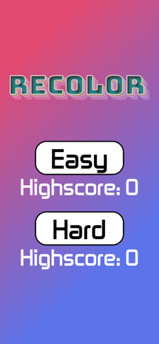

Recolor



Recolor is a simple Simon like memory game developed in Corona SDK. Corona is a cross-platform language build on top of Lua. Using this framework I was able to build a simple game that I have published to both the google play, and apple app store, to positive reception. This application was mostly a test to see how I could use the Corona SDK in the future on bigger projects.